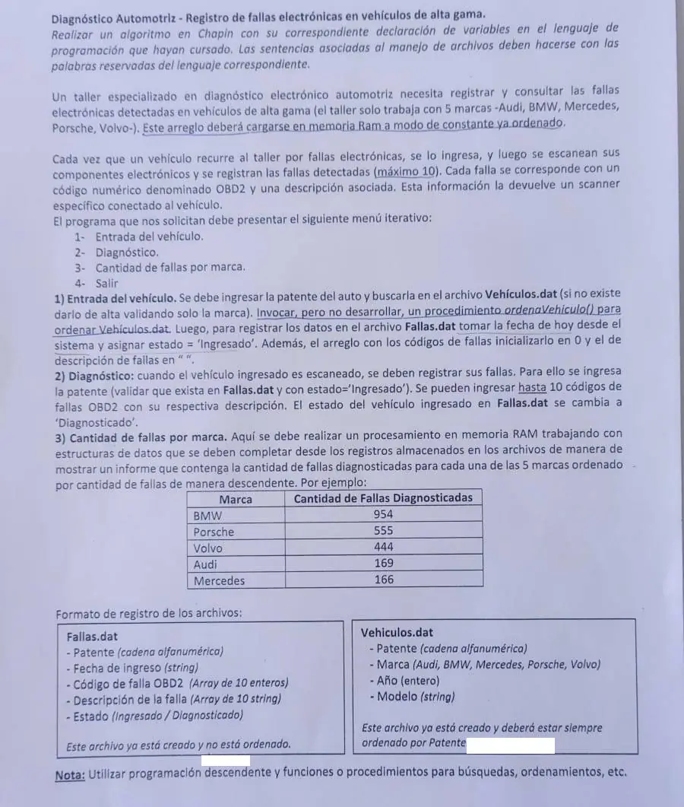

Final, 20/08/2025 (Diagnóstico automotriz)
3° parcial y final, 20/08/2025
Enunciado


Propuesta de respuesta
Respuesta no verificada. La propuso Luta Studios con inteligencia artificial y ningún docente la revisó. Puede tener errores.
La hoja pide el diagrama de Chapin. Va un diagrama por módulo, con su declaración de variables arriba, y primero el del programa principal. Si un diagrama no entra en la pantalla, tocalo para verlo completo. Después de los diagramas está el mismo algoritmo en Python, para que lo puedas probar. Las sentencias de archivos van con las palabras reservadas de Python (open, pickle.load, pickle.dump, seek, tell). Los textos se completan con ljust para que los registros midan lo mismo. El tamaño de un registro sale de tell() después de leer el primero.
Menú iterativo
1- Entrada del vehículo
2- Diagnóstico
3- Cantidad de fallas por marca, en memoria
El mismo algoritmo en Python
Es el programa que se probó, con las mismas sentencias y en el mismo orden que las cajas. Cada Leer del diagrama es un input, convertido a int o float según la declaración, y cada Mostrar es un print.
import os
import pickle
from datetime import date
class Falla:
def __init__(self):
self.patente = ""
self.fecha = ""
self.codigo = [0]*10
self.descripcion = [""]*10
self.estado = ""
class Vehiculo:
def __init__(self):
self.patente = ""
self.marca = ""
self.anio = 0
self.modelo = ""
# marcas: arreglo [0..4] de str, constante y ordenado
marcas = ["Audi", "BMW", "Mercedes", "Porsche", "Volvo"]
# afFallas, afVehiculos: str
# alFallas, alVehiculos: archivo
afFallas = "Fallas.dat"
afVehiculos = "Vehiculos.dat"
alFallas = open(afFallas, "r+b")
alVehiculos = open(afVehiculos, "r+b")
def BUSCA_MARCA(m):
# Dicotómica sobre el arreglo de marcas (m llega completada con ljust)
# m: str
# inicio, fin, medio, pos: int
inicio = 0
fin = 4
pos = -1
while inicio <= fin and pos == -1:
medio = (inicio + fin) // 2
if marcas[medio].ljust(10, " ") == m:
pos = medio
elif m < marcas[medio].ljust(10, " "):
fin = medio - 1
else:
inicio = medio + 1
return pos
def BUSCA_VEHICULO(pat):
# Dicotómica: Vehiculos.dat está ordenado por patente
# pat: str
# tamReg, inicio, fin, medio, pos: int
# reg: Vehiculo
pos = -1
if os.path.getsize(afVehiculos) > 0:
alVehiculos.seek(0, 0)
pickle.load(alVehiculos)
tamReg = alVehiculos.tell()
inicio = 0
fin = os.path.getsize(afVehiculos) // tamReg - 1
while inicio <= fin and pos == -1:
medio = (inicio + fin) // 2
alVehiculos.seek(medio * tamReg, 0)
reg = pickle.load(alVehiculos)
if reg.patente == pat:
pos = medio * tamReg
elif pat < reg.patente:
fin = medio - 1
else:
inicio = medio + 1
return pos
def ENTRADA():
# pat, m: str
# i: int
# hoy: date
# veh: Vehiculo
# fal: Falla
pat = input("Patente: ").ljust(10, " ")
if BUSCA_VEHICULO(pat) == -1:
veh = Vehiculo()
veh.patente = pat
m = input("Marca: ").ljust(10, " ")
while BUSCA_MARCA(m) == -1:
m = input("El taller no trabaja esa marca, ingrese otra: ").ljust(10, " ")
veh.marca = m
veh.anio = int(input("Año: "))
veh.modelo = input("Modelo: ").ljust(20, " ")
alVehiculos.seek(0, 2)
pickle.dump(veh, alVehiculos)
alVehiculos.flush()
ordenaVehiculo()
fal = Falla()
fal.patente = pat
hoy = date.today()
fal.fecha = (str(hoy.day) + "/" + str(hoy.month) + "/" + str(hoy.year)).ljust(10, " ")
for i in range(10):
fal.codigo[i] = 0
fal.descripcion[i] = " ".ljust(30, " ")
fal.estado = "Ingresado".ljust(13, " ")
alFallas.seek(0, 2)
pickle.dump(fal, alFallas)
alFallas.flush()
def BUSCA_INGRESADO(pat):
# Secuencial: Fallas.dat no tiene orden
# pat: str
# tam, pos, p: int
# reg: Falla
tam = os.path.getsize(afFallas)
pos = -1
alFallas.seek(0, 0)
while alFallas.tell() < tam and pos == -1:
p = alFallas.tell()
reg = pickle.load(alFallas)
if reg.patente == pat and reg.estado == "Ingresado".ljust(13, " "):
pos = p
return pos
def DIAGNOSTICO():
# pat: str
# pos, i, cod: int
# fal: Falla
pat = input("Patente: ").ljust(10, " ")
pos = BUSCA_INGRESADO(pat)
if pos == -1:
print("No hay un vehículo ingresado con esa patente")
else:
alFallas.seek(pos, 0)
fal = pickle.load(alFallas)
i = 0
cod = int(input("Código OBD2 (0 para terminar): "))
while cod != 0 and i < 10:
fal.codigo[i] = cod
fal.descripcion[i] = input("Descripción: ").ljust(30, " ")
i = i + 1
if i < 10:
cod = int(input("Código OBD2 (0 para terminar): "))
fal.estado = "Diagnosticado"
alFallas.seek(pos, 0)
pickle.dump(fal, alFallas)
alFallas.flush()
def FALLAS_POR_MARCA():
# cant: arreglo [0..4] de int
# nom: arreglo [0..4] de str
# tam, i, k, m, auxC: int
# auxN: str
# fal: Falla
# veh: Vehiculo
cant = [0]*5
nom = [""]*5
for i in range(5):
nom[i] = marcas[i]
tam = os.path.getsize(afFallas)
alFallas.seek(0, 0)
while alFallas.tell() < tam:
fal = pickle.load(alFallas)
if fal.estado == "Diagnosticado":
alVehiculos.seek(BUSCA_VEHICULO(fal.patente), 0)
veh = pickle.load(alVehiculos)
m = BUSCA_MARCA(veh.marca)
for i in range(10):
if fal.codigo[i] != 0:
cant[m] = cant[m] + 1
for i in range(4):
for k in range(i + 1, 5):
if cant[i] < cant[k]:
auxC = cant[i]
cant[i] = cant[k]
cant[k] = auxC
auxN = nom[i]
nom[i] = nom[k]
nom[k] = auxN
print("Marca / Cantidad de fallas diagnosticadas")
for i in range(5):
print(nom[i], cant[i])
# Programa principal
# opcion: int
opcion = 0
while opcion != 4:
print("1- Entrada del vehículo")
print("2- Diagnóstico")
print("3- Cantidad de fallas por marca")
print("4- Salir")
opcion = int(input("Opción: "))
while opcion < 1 or opcion > 4:
opcion = int(input("Opción inválida: "))
match opcion:
case 1:
ENTRADA()
case 2:
DIAGNOSTICO()
case 3:
FALLAS_POR_MARCA()
alFallas.close()
alVehiculos.close()Respuesta no verificada. Puede tener errores.
Se armó con la hoja del examen y la página del 3° parcial y final (registros como clase, recorrer, búsquedas, actualizar un registro y alta). Las operaciones de archivos siguen las diapositivas de merge y corte de control. El Chapin sigue la forma de las diapositivas del examen de Historia Clínica de 2019. El informe en memoria sigue el ordenamiento con arrastre del 2° parcial.
Quedó en duda: En el alta se valida solo la marca, como dice la hoja. El año y el modelo no se validan. El arreglo de marcas está ordenado, así que se busca con dicotómica. Cada marca se completa con ljust para compararla con lo que guarda el archivo. La fecha se guarda como texto día/mes/año completado a 10 caracteres, porque la hoja no da el formato. Los estados se completan a 13 caracteres, el largo de «Diagnosticado», para que el registro no cambie de tamaño. En Python, pickle graba un entero menor que 256 en menos bytes que uno más grande. Por eso un código OBD2 de 256 o más, cargado donde había un 0, agranda el registro de la falla. Entonces el registro deja de coincidir con la posición que calcula el programa. El material pide registros del mismo tamaño y solo muestra cómo lograrlo con textos (ljust). Las pruebas se hicieron con datos que no cambian el tamaño. Si una patente entra dos veces sin diagnóstico, se diagnostica la primera. Las fallas por marca cuentan los códigos cargados en los registros diagnosticados. Las diapositivas de la materia no muestran en Chapin la lectura de datos ni la selección múltiple. Acá van como Leer y como Según, con una columna por caso.
¿Cómo te fue?
Marcá cada tema del examen.
- ArchivosSecuencial y de acceso directo, en 3° parcial y final
- MemoriaDatos, variables y tipos, en 1° parcial
- OrdenamientoOrdenamiento, en 2° parcial